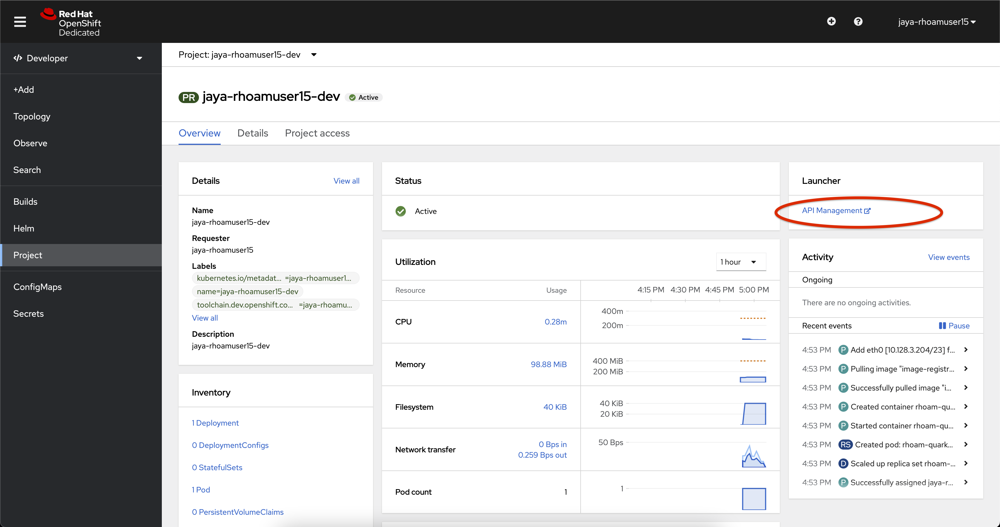
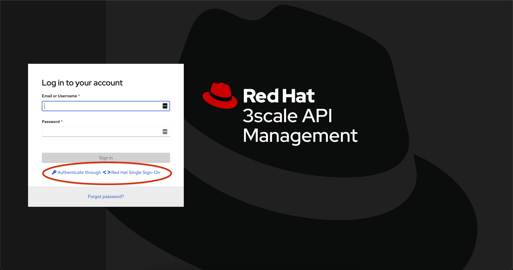
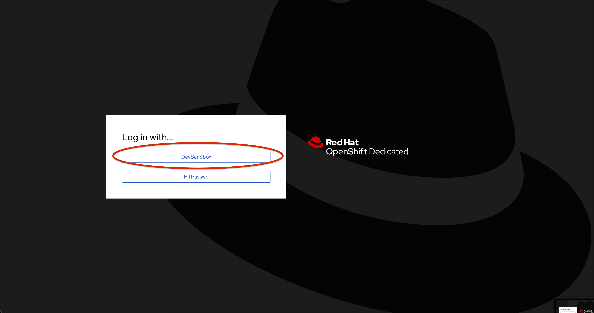

Launch the API Management Dashboard
-
In the OpenShift console, ensure you are using the project
<username>-dev -
Select Project from the left side navigation pane.
-
In the Launcher pane on the right side, select API Management
 -
Choose to authenticate by clicking on the Authenticate through <>using Red Hat Single Sign-On link, and then login using the identity provider that applies to you, e.g. DevSandbox.
 -
If welcome message maybe displayed if this is your first-time logging into OpenShift API Management. Dismiss, or read through the welcome message page(s).
You are now on the Red Hat OpenShift API Management dashboard.